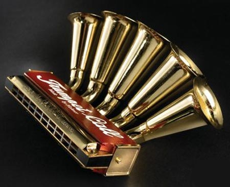

I can play on drums
here’s my tresure
also on piano

I can play on drums
here’s my tresure
also on piano
I don’t understand your last sentence, but…
I play Alto Saxophone, Piano, and in FL Studios.
I play the Viola and some Piano.
/classicalfag
I play on piano too but prefer drums more
also in my last sentence i ment that i have just bought them and i am very happy
Used to play piano, now trying to pick up guitar.
I used to play drums, but I haven’t sat down at a set in forever and a half ago.
I play;
Piano (grade 6)
Alto Sax (grade 7)
Self taught guitar (grade bad)
Ocarina (grade triforce)
I can play the trumpet. That’s the extent of all of my musical talent. 
I have played:
set drums for 11 years
clarinet for 9 years
alto saxophone for 5 years
And I sing baritone/countertenor.

The big amp is a line 6 Spider 3. The blue guitar is some Austin model. The unpainted guitar is one I made myself(I screwed up bad on the headstock). The trumpet is a beginner Holton(I don’t have enough money to get a new one. and the small amp on top of the bed is some crappy brand I got it a set. with the blue guitar. I also have two acoustic guitars(not in the picture). Both really crappy. and I have one more electric guitar. It’s an Epiphone Special SG.
edit: Oh! I forgot the piano. I don’t remember what it is. I sold it awhile ago…
I play bass. Badly. Electric, not stand-up. :meh:

seeing all these musical people makes me feel less good about my own abilities. I’ve played guitar since freshman year of high school, and don’t have much to show for it. 
i play guitar, bass, and harmonica. all unimportant off-brands except my bass which is a peavey with a wood finish. it’s got some bitchin tone. i’ve also got a digitech death metal, thing fucking eats through batteries like cake but its crunchy.
Been playing drums for 5 years now, played trumpet for 3, and pretty much know the basics on the Bass.
Used to play trumpet. Couldn’t play it now, though if my life depended on it.
drums for about 11 years, piano for about 3 years, and I’m majoring in music at UC Santa Cruz, so I’d say I know how to play them decently
I’m surprised to see so many people here play instruments, it’s awesome!
Violin (Electric), Piano, Alto and Tenor Sax, and Bongos.
If we are including synths and programs etc, I compose in Anvil Studio, Finale, and FL Studio.
I generally write for at least 3 instruments, all the way up to full orchestral arrangement.
I also like to sequence and arrange old game music. It provides a challenge and helps me learn the ins and outs of plugins and programs.
i want to get and learn a banjo kinda
Founded in 2004, Leakfree.org became one of the first online communities dedicated to Valve’s Source engine development. It is more famously known for the formation of Black Mesa: Source under the 'Leakfree Modification Team' handle in September 2004.